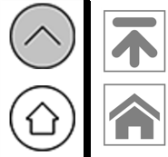

Iconfont初体验
本打算去网上找一些Icon图标，“美化”一下自己的网站。然而，我并没有到平时常去的EASYICON，而是鬼使神差地来到了一个叫ICONFONT的网站。至此，我还不知道Iconfont是什么东西。如往常一样挑选好图标，点击下载。可是，下载来的却并不是一个个的图标，而是一堆奇怪的文件……
WTF?
上网搜索，才发现这是字体图标，一种矢量的图标。
iconfont对于前端应用来说有很多便捷：
1、自由变化大小。
2、自由修改颜色。
3、可以添加一些视觉效果如：阴影、旋转、透明度。
4、兼容IE6。
就我个人的体验来看，与传统图标最大的不同在于，无论怎么放大都不会出现边缘锯齿（这是矢量图的特点）

如上图所示，左侧为传统png格式图标，右侧为Iconfont矢量图标。左侧有明显可见的边缘锯齿，而右边则没有（其实是没有的，现在有是因为截图的缘故）。
再加上可以自由改变大小和颜色，这次真的是发现宝贝了😂